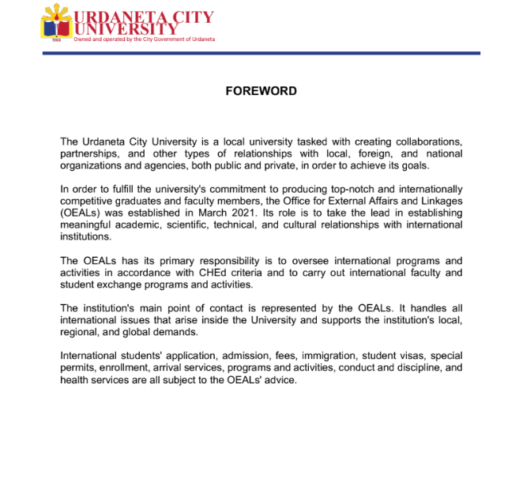

The university has an established External Affairs and Linkages Office (EAL) that serves as the primary unit responsible for coordinating and facilitating sustainability programs and initiatives across the campus. The office works collaboratively with academic departments, administrative units, student organizations, government agencies, industry partners, and community stakeholders to ensure that sustainability principles are integrated into institutional activities, extension programs, research, and community engagement.
As the coordinating office, the External Affairs and Linkages Office is responsible for:
The office operates under the university's approved organizational structure and carries out its functions in accordance with its established mandate. Through its coordination role, the External Affairs and Linkages Office ensures that sustainability initiatives are effectively implemented, aligned with the university's strategic goals, and continuously enhanced through partnerships and stakeholder engagement.